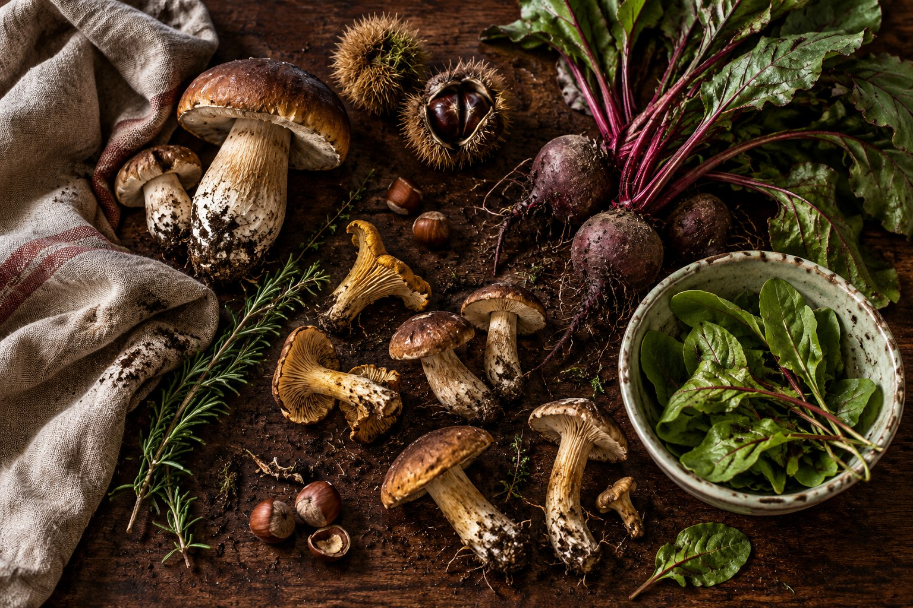

La casa e la cucina
La cucina
prende casa.
SELVA nasce dall’incontro fra un’idea di cucina stagionale e un modo raccolto di stare insieme.

Il luogo
Legno, pietra.
E una tavola aperta.
Una sala raccolta, materiali che portano il segno del tempo, la luce che cambia durante il giorno. La casa accompagna la cucina, senza metterle fretta.
Immaginiamo un’ospitalità fatta di attenzione: dal primo benvenuto alla scelta del percorso, fino all’ultimo calice.
Scegli la tua occasione
La cucina
Prima l’ingrediente.
Poi il gesto.
Il menu segue ciò che la stagione offre. Orto e bosco, cotture lente e brace, fermentazioni e note fresche: una grammatica essenziale, da ritrovare in ogni piatto.
- Stagionalità
- Una carta che cambia insieme alla materia.
- Misura
- Trasformare, lasciando riconoscere i sapori.
- Ospitalità
- La cucina continua nel modo di accogliere.

Due percorsi, una cucina
Segui il bosco.
Oppure il tuo istinto.
Il percorso Selva, le cinque interpretazioni vegetali di Radici, oppure la libertà della carta.
Scegli come vivere SELVA